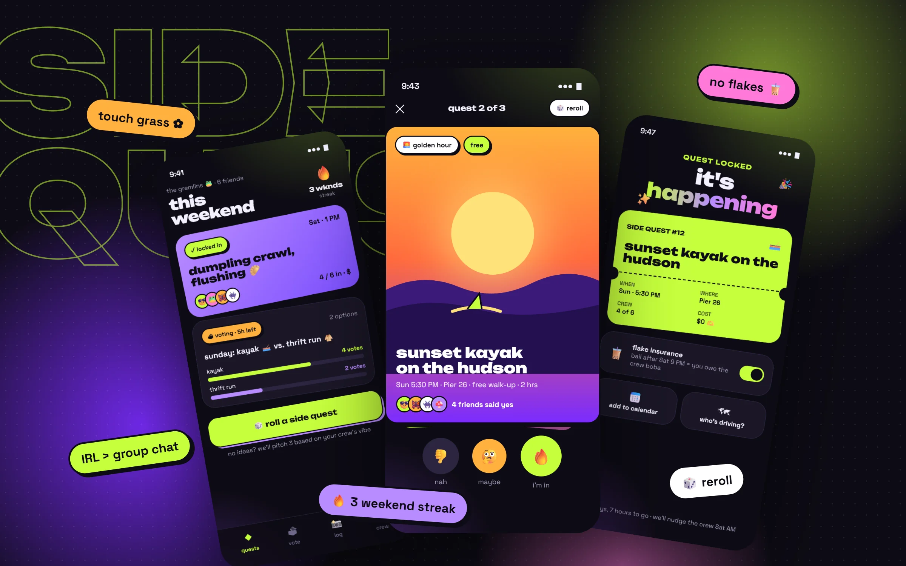
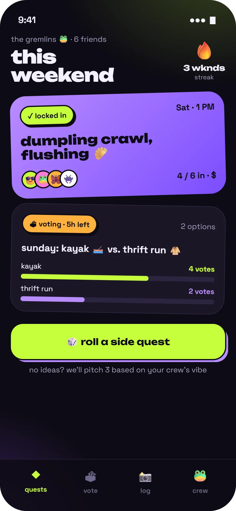
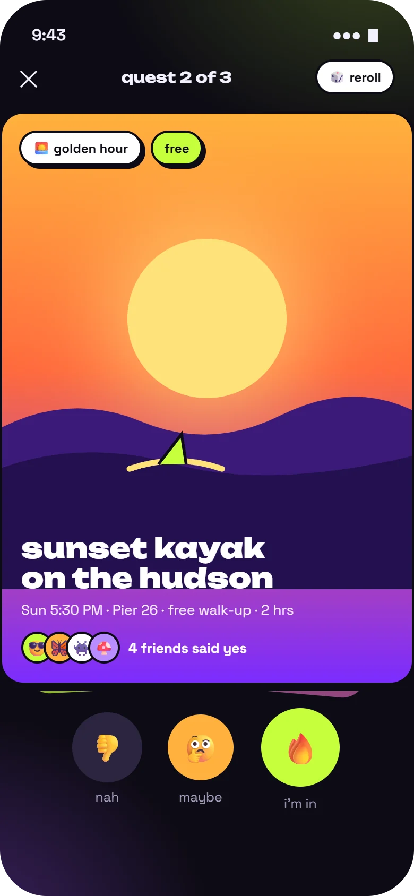
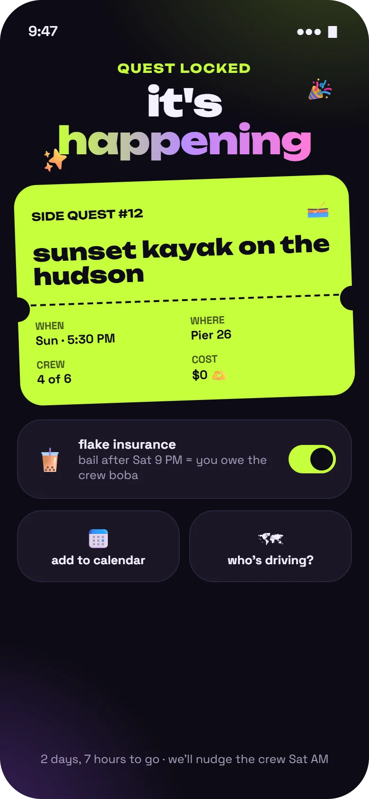
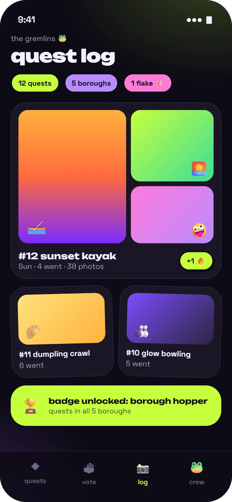
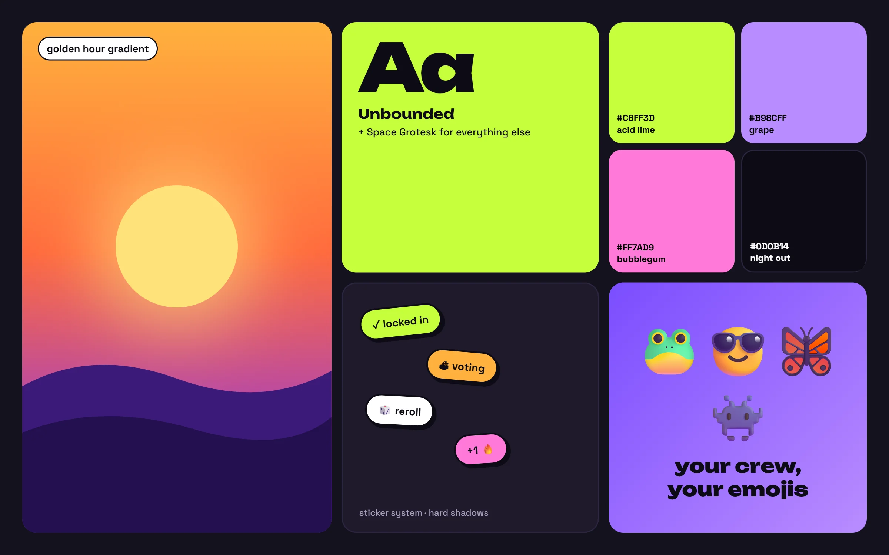

Social app · Brand identity · Playful interaction design
Sidequest
Turning "we should hang out" into plans that actually happen.
Type
Self-initiated concept
My role
Solo: concept, identity, UX, UI and motion
Platform
iOS app for friend groups
Vibe
Acid lime, grape, stickers, zero corporate energy

Concept projectA just-for-fun design exploration. I didn't run research for it; the crew archetypes are playful assumptions, and the test plan at the end shows how I'd check them. Every friend, place and plan in the screens is made up.
Overview
tl;dr
Context
Friend groups live in group chats. Plans get suggested there constantly, and most quietly die between memes and "lol yes".
Problem
Nobody wants to be the one who decides, there are too many options, nothing has a deadline, and bailing costs nothing. So "we should hang out" stays a vibe, not a plan.
Solution
Plans become side quests: small, specific, slightly silly. Friends swipe-vote before a deadline, the winner becomes a ticket with optional flake insurance, and every hangout lands in a quest log that builds a weekend streak.
Deliverables
Brand identity and mood board, 4 high-fidelity screens, interaction and motion notes, two design decisions, and a test plan.
"we should hang out" → 0 hangouts
The most-sent, least-done message in any group chat. Sidequest is designed around one question: what would make it easier to say yes, and harder to quietly disappear?
The crew
Every friend group has these four
Playful archetypes, not research personas. Each one points at a specific way plans fall apart, and a feature designed for it.
📋
The Planner
I always organize. I'm tired.
Needs: to share the load. Votes decide, so it's never on one person.
🤔
The Maybe
I'm down! (doesn't reply)
Needs: a deadline. Votes close in hours, not "whenever".
🫠
The Flake
omg so sorry, tomorrow?
Needs: a tiny stake. Flake insurance means bailing late buys the crew boba.
📣
The Hype
we should go to Japan!!
Needs: ideas that fit a weekend. "Roll a quest" turns energy into 3 real options.
Big idea
Plans, but make them quests
Calling a plan a quest changes how it feels. A quest is short, specific and a bit of an adventure, which makes it easier to say yes to than "let's hang out sometime."
01
Decide together, fast
Swipe-voting with a deadline replaces endless "idk, what do you guys want?" threads.
02
Make showing up the fun part
A locked plan becomes a ticket with a countdown, so the plan feels like an event.
03
Make memories the reward
A shared quest log, streaks and badges turn hangouts into a story the crew builds together.
Feature drops
Four screens, one weekend
Drop 01 · Crew home
What's locked, what's voting, what's next

A
Locked plans get the loudest cardThe purple card is tilted like a sticker on a fridge. It's the thing to look forward to.
B
Votes show a deadline"5h left" gives The Maybe a reason to reply now.
C
The streak lives up top"3 wknds" is a small, shared goal, not a personal score.
D
No ideas? Roll oneThe big lime button pitches three quests based on what the crew has liked before.
Drop 02 · Swipe to vote
Deciding should feel like a game, not a poll

A
Every quest is a posterIllustrated cards, not text rows. Time, place and cost sit in one line underneath.
B
Social proof on the card"4 friends said yes" makes joining easier than leading.
C
Three answers, one obvious"I'm in" is the biggest button; "maybe" exists, because forcing yes or no just makes people skip.
D
Reroll anytimeHate all three? Roll again. No idea is precious.
Drop 03 · Quest locked
A ticket, not a calendar invite

A
"It's happening"A big moment for a small plan, with confetti and a haptic tap when the vote closes.
B
Ticket stub layoutPerforation, quest number, and only the four facts that matter: when, where, crew, cost.
C
Flake insuranceOpt-in and silly on purpose: bail after the cutoff and you owe boba. Social stakes, no money.
D
The boring bits, handledCalendar and "who's driving?" are one tap, so logistics don't restart the group chat.
Drop 04 · Quest log
The reward is the memory

A
Crew stats as stickers12 quests, 5 boroughs, and yes, 1 flake. Honest and funny, never shaming.
B
Shared photo collageEveryone's photos from the quest land in one place, not scattered across six camera rolls.
C
Badges for variety"Borough hopper" rewards trying new things, not just showing up more.

Mood board · Loud on purposeA golden-hour gradient, chunky rounded type, stickers with hard shadows, and a palette that would look wrong in a bank app. That's the point.
Visual language
Loud, but still legible
The identity borrows from stickers, gig posters and night-out flyers. The rule underneath: neon colors always sit on near-black, so text stays well above accessible contrast, and every emoji has a text label beside it.